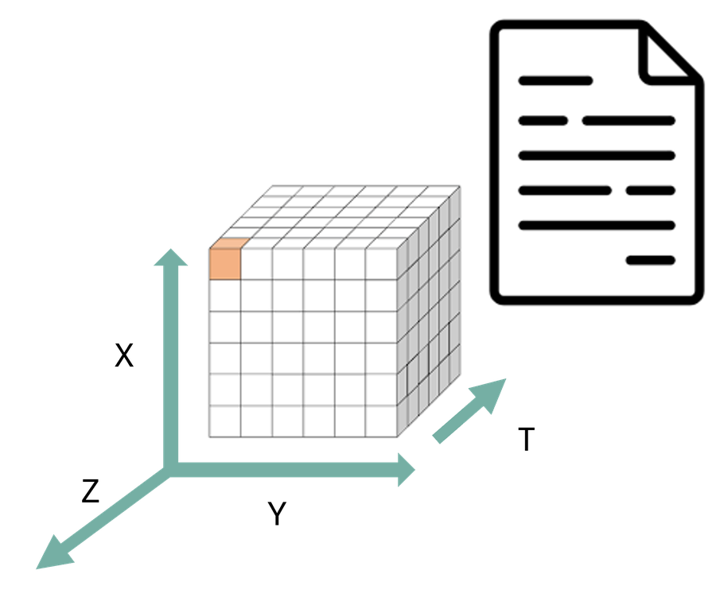

Interoperability in Climate and Atmospheric sciences
FAIR NetCDF Data
Can another tool determine how the dataset is organised and process it without bespoke instructions from the person who created it?
Machines can determine how a dataset is organised (structure), even if they do not yet understand what the values represent (semantics).
A shared data contract is an agreement about how data are organised.
At its centre is the data model: the logical structure that software expects to find.
A file extension (.csv, .nc, .tif, .zarr) is not the contract. It hints at how data are stored, but not how they are organised.
The choice reflects how you conceptualise the scientific data. Choose a representation that preserves that structure with the least flattening, reconstruction, or artificial complexity.
| I think of my data as… | Natural model |
|---|---|
| “a collection of observations” | Tabular |
| “variables varying along several shared dimensions” | Multidimensional arrays |
| “a collection of meteorological forecast fields” | GRIB |
| “a georeferenced spatial surface” | Raster |
| “geographic objects with properties” | Geospatial features |

Network Common Data Form: a portable, self-describing format for array data, created at Unidata (UCAR) in the late 1980s.
Both variables share dimensions: the relationship is explicit, not inferred from where values sit in the file.
NetCDF tells software
✔ these are variables
✔ type, dimensions, shape
✔ attributes attached to them
It does not tell software
? same physical quantity?
? same units?
? are lat and latitude the same axis?
CF Conventions add the community rules: standard names, units, coordinates, grid mappings: temp:standard_name = "air_temperature"
Ash has received a radar dataset and wants to know how it is organised before writing any code.
Open the OPeNDAP page for the IDRA dataset:
https://opendap.4tu.nl/thredds/dodsC/IDRA/2019/01/02/IDRA_2019-01-02_12-00_raw_data.nc.html
Help Ash identify:
⏱ 10 minutes, in pairs. Do as much as the allows. More: https://4turesearchdata-carpentries.github.io/interoperability-climate-sciences/structural-interoperability.html
1. Global attributes
title, institution, history, references, Conventions, location, source, example
Conventions = "CF-1.4": the producer’s intention to follow CF, not proof of conformance.
2. Dimensions
4 and 5. Data variables, dimensions, types
6. Missing data
_FillValue: -999.0 on equivalent_reflectivity_factor, differential_reflectivity, radial_velocity, spectrum_width.
Its existence, location, and type are structural. Whether to exclude or interpolate missing values is an analytical decision.
7. Metadata stored as variables
iso_dataset, product, station_details: string variables, not global attributes.
Ash learned all of this from the file itself, with no bespoke instructions: that is structural interoperability at work.